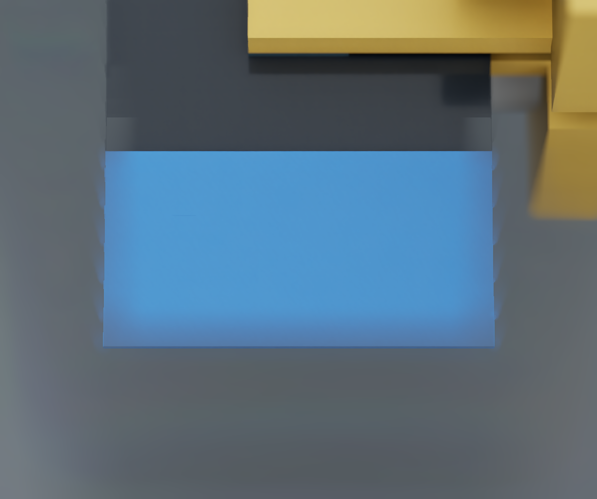
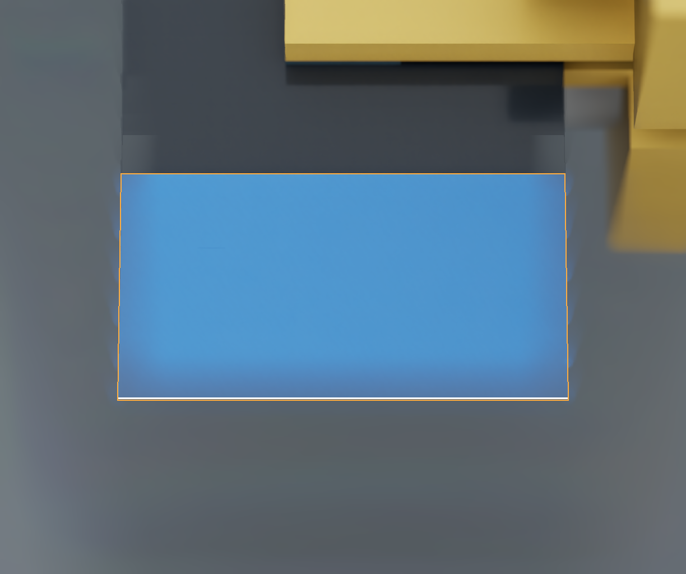
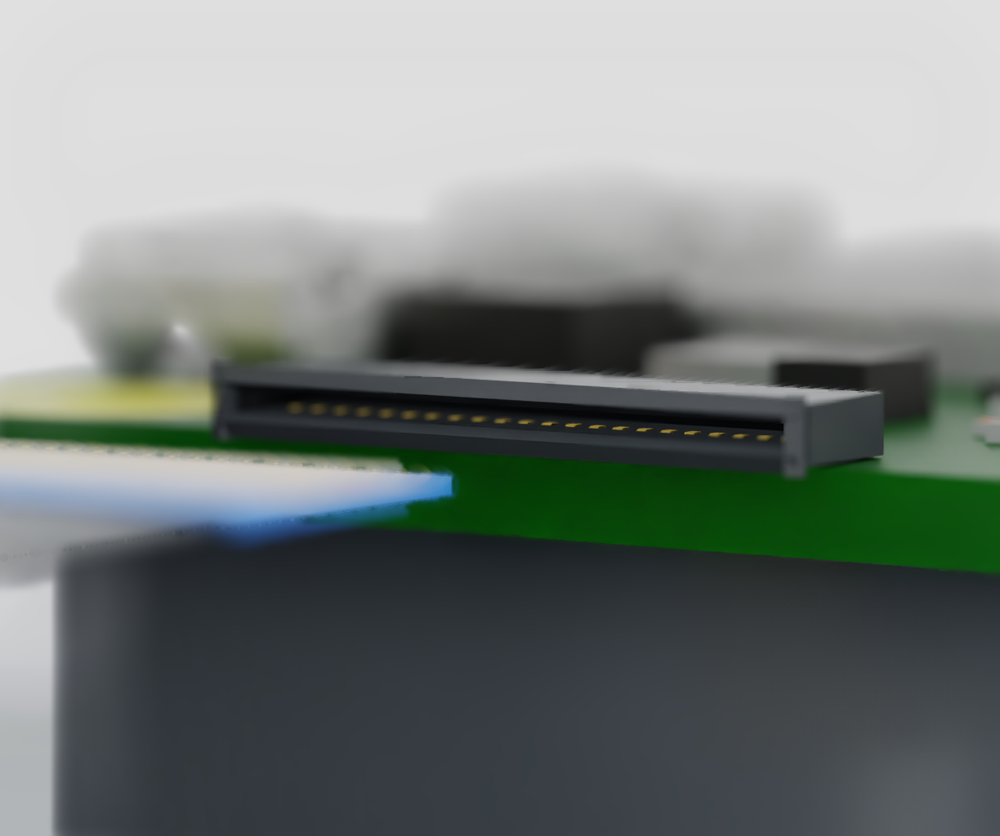
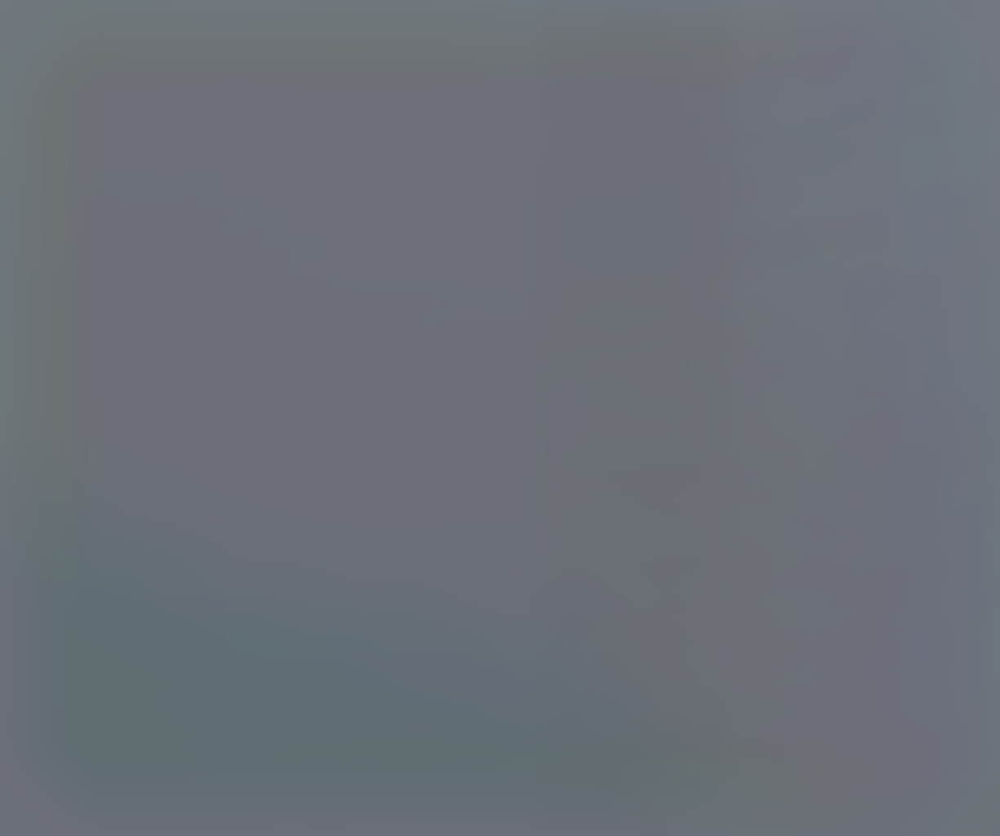

A fresh Isaac physics run closed the mounted PGEA-2-10 candidate on the cable's insulated body, lifted it 10.032 mm and held bilateral pad contact. The Pi Zero 2 W CAD and the spring-contact socket reference were present, with full external tool collision geometry enabled.
The run stops at inspection. It does not insert the cable. The fresh RGB edge estimate is 95.3 µm from its independently scored surface position. That exceeds the assumed 50 µm vertical clearance per side; a small stereo reprojection error did not establish sufficient geometric accuracy.
Open the recorded USD timeline · Frozen physics rerun bundle · Run report · Pad, encoder and command log
Two fixed Basler ace 2 / Kowa 35 mm optical references capture native Isaac RGB at 1224 × 1024. Classical colour and edge processing finds the blue terminal; calibrated stereo estimates its leading edge. The cameras capture after physics stops. These images are not a continuous ROS camera-control loop.


The earlier replay-development frames scored 22–28 µm. The new physics capture scored 95.3 µm, including an 88.2 µm height error. A near silhouette can include the cable's cut face, so two apparent corners need not be the same physical point. An experimental far-top-edge fit also abstains under its current consistency check. Neither method authorizes motion.
Independent geometry score · Actual inspection output · Retained far-edge attempt · Camera calibration · Earlier development scores
The opposite-side view was blocked by the gripper. Moving both candidate entrance cameras to the clear side exposes the opening. These are static, physics-disabled layout checks with the recorded held pose. Focus still varies across the socket; visible housing is not yet a verified metric entrance measurement.


The arm uses its encoders and ideal pad-load channels to grip and lift. Cable body poses are written separately for offline scoring and playback. The cable starts on a passive support with underside access; this is not pickup from an arbitrary flat desk placement. Vacuum is not active.
The original board-support overhang obstructed the final approach. The narrower support gives 1.116 mm minimum sampled tool/board separation over 12.5 mm of translation and ±0.5° yaw. This bounds review excludes the full arm sweep, camera bodies and mounting tolerances.
Next: resolve top-edge measurement bias, verify the contact-facing side and recover the entrance plane from RGB. Then test a short camera-driven alignment correction with a fresh observation before connecting the existing contact-guarded feed. Seating and latch closure remain separate tests.
The socket dimensions, contact springs and material parameters retain their documented assumptions. One lift does not qualify cable damage, physical hardware or task reliability. Playback uses recorded states with physics disabled; the frozen bundle reruns physics and has not yet been independently rerun.
Sampled clearance review · Earlier isolated socket entry and blocked-mouth trials · Live lab